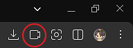
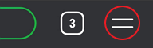

• 본방 - 공부방 - 웨일온 닉네임 항상 똑같이 유지 → 강제퇴장 사유
• 강제퇴장 될 경우 같은 네이버 계정으로는 더 이상 스터디에 참가할 수 없습니다.
• 글자가 너무 클 경우 브라우저 상단 주소창에서 글자 크기를 75%로 내려주세요.
• 웨일 실행 후, 우측 상단 웨일온 아이콘 클릭
• 아이디와 비밀번호를 입력한 후, 입장합니다.

• 톡방에서 주소를 클릭하거나, 복사 후 웨일 주소창에 붙여 넣기 합니다. 링크
• 입장하기 클릭! (네이버 로그인 필요)
• 비밀번호 입력 후 입장합니다.
• 웨일 실행 후 우측 하단에서 = 모양
• 회의입장 누르고, 아이디와 비밀번호 입력 후 입장합니다.

• 윈도키+S > “기본 앱” 검색 > 스크롤 내려서 웹브라우저에서 네이버 웨일이 선택되어 있는지 확인
• 기본 앱 변경이 어렵다면 웨일 브라우저를 직접 실행하여 주소를 붙여 넣기 하거나, 웨일에 즐겨찾기를 추가해 사용하세요.
• 설정 > 개인정보 보호(whale://settings/secrecy) > 공용 PC로 설정 ON > 웨일 재부팅 > 로그인 후 공용 PC 설정 OFF
• 윈도 업데이트 다운로드: 32비트 64비트 (MS 공식 사이트)
• 운영체제에 맞게 KB2813430 업데이트 다운로드 > 업데이트 설치 > 웨일 재설치
• 스피커가 있는 PC인지 확인해주세요, 스피커가 없으면 입장이 되지 않습니다.
• 바이러스 프로그램이나 보안 프로그램이 실행 중이거나 설치되어 있는지 확인해 보세요. (예: Ahnlab Transaction, DRM Tools, MS Defender 실시간 감시, Mcafee 백신, AppCheck 등)
• 채팅방에서 @김지운, 증상과 사용하시는 환경(예: 윈도 10, 노트북, 외장캠 등) 적어주시면 도와드리겠습니다.